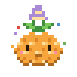

M ask MyraF focusdouble-click new note⌘K quick capture⌘F findspace drag to pan⌘\ just the board

What’s new ✦
Hi, I'm Myra!
I'm a cloudberry who lives in your boards. Cloudberries only grow where conditions are right, and ideas are the same. Let's set yours up. It takes about a minute.
When is your birthday? Optional. I like a party.
Make it yours
Pick my colour and how the app looks. You can change these later.
My colourMe in the dock and the logo
ThemeLight, dark, or match your system
My thinking
I think with Claude Code on your computer. My helpers are connections in your Claude account: Mobbin finds real app screens. Higgsfield makes images and costs credits, so I always ask first.
You're trying the web version, so I can't connect to Claude, Mobbin or Higgsfield here. Everything else works! Download the desktop app and I'll connect to all three.
Not ready yet? That's fine, skip it. Connect later, then tap here or in Settings.
How I talk
Some people like a chatty buddy, and some like quiet.
How chattyQuiet talks only when you ask
Remember our chatsSaved in your board files on this computer
Your board
How cards feel when you make them.
New note colourWhat a fresh note starts as
You're all set!
Want a tour? I'll show you around and you can try things as we go. It takes about a minute.
Your first boardAn example to look at, or a clean start
You can find all of this in Settings, the ⚙ next to Fenmyr, including this tour.
Myra
Licences
Loading…
Settings
Look
ThemeLight, dark, or whatever your system is using
Light theme
Dark theme
Your own colours sit on top of the theme you pick.
ColoursBackground, dots, panels and accent. Right-click a board to give it its own background.
Text on this accent is hard to read in the theme you picked. Try a darker or lighter accent, or Reset colours.
Icon styleRegular is plain outlines. Duotone adds a tint to the tools, the bottom bar and Myra's chat header.
On the board
Default fontFor board text and docs without their own font. Menus and panels don't change.
New note colourWhat a fresh note starts as
Grid shapeDots, small shapes or none
Your cursor
Cursor colour
Accessibility
About you
BirthdayOptional. Myra celebrates it with you. Only the month and day are kept, on this computer.
Myra
Her nameShe answers to this name everywhere.
How lively she isCalm: she sits still. Calmest: she sits still, in muted colours.
Her colourMyra in the dock and the logo
How chatty she isQuiet talks only when you ask. Chatty adds tips and cheers.
Remember chatsSaved in your board files on this computer. Off forgets each chat. Prototype boards always keep theirs.
How many messages to keepOlder messages fall off the top. A prototype keeps its last 500.
Saved chatsDeletes Myra's chat history from every board
Skipped until Fenmyr closes
Claude usage
Today–
Last 7 days–
Since you started–
Just Myra's share, counted on this computer. Your plan's limits cover everything you do with Claude.
Myra's helpers
This is the web version, so Myra can't reach Claude Code or your helpers from here. Download the desktop app to connect them.
Helpers are the connections in your Claude account. Connect one in Claude's settings, then come back and tap .
Git and GitHub
Prototypes are saved as code in git, which keeps every version. Set it up once for this computer.
Obsidian vaults
Connect an Obsidian vault so Myra can show and read your notes. She only reads, never changes anything, and only where you allow it.
Connect a vault below.
Give access. Each project or board chooses which folders it may read. Use Give access… on the vault, or right-click a project or board and choose Vault access.
Allow AI reading (optional). In the same dialog, switch on “Let Myra read these with AI”. Then add the vault under Myra sees in Myra’s chat for the messages where you want her to look. Only then are matching notes sent to Claude, a cloud service.
Folders you mark off-limits, and any note tagged #private, are never read.
Toolbar
Icon sizeThe size of the tools at the top right. Tools that don't fit go into a ··· menu.
Your toolsSwitch tools on or off and drag to reorder them. Shortcuts still work for hidden tools.
Widgets
Turn on the ones you use. The Boards panel always stays, since it's home to your boards and Settings.
Arrange themDrag a widget by its title to any spot on either side.
Working on the board
Keyboard shortcuts
Your boards
1 board, Locally savedNote: Using Myra when she's powered by Claude or another AI that doesn't run on this computer, or linking prototyping boards to a remote repo, sends information about your boards, projects and folders along.
Fenmyr Where ideas thrive. Free and open source (EUPL-1.2).
UpdatesChecking for a new version…
Channel
Camera & microphone
CameraFor video cards
MicrophoneFor voice memos and videos
New here, or need a refresher?Myra shows you around in about a minute
💌
Tell me what you thinkIdeas and bugs go to this version's GitHub issues.
made with care by
Stephen Chiang
Built on MochiboardFenmyr grew from Mochiboard, Jessa Wolfe's open-source planning canvas (MIT). Mochiboard, Mochi and their art are hers and aren't part of Fenmyr.
Open-source licencesFenmyr's own licence, and the software made by others that Fenmyr includes.